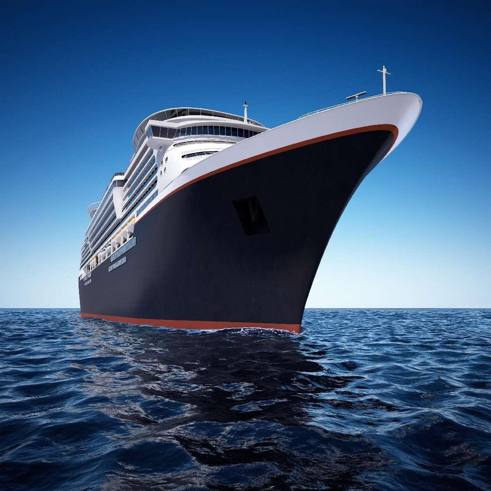
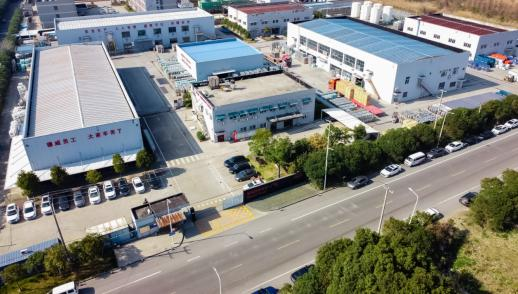
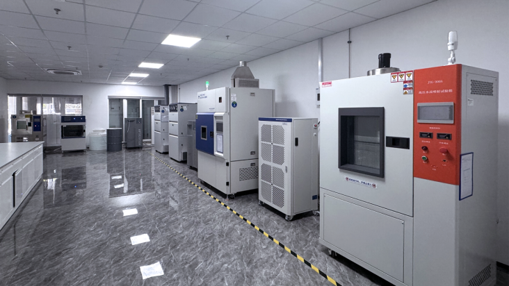
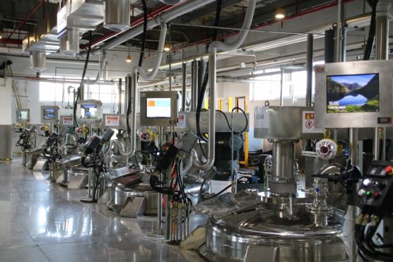
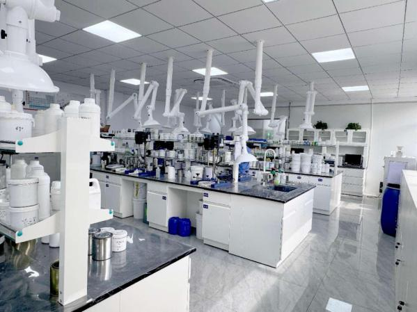
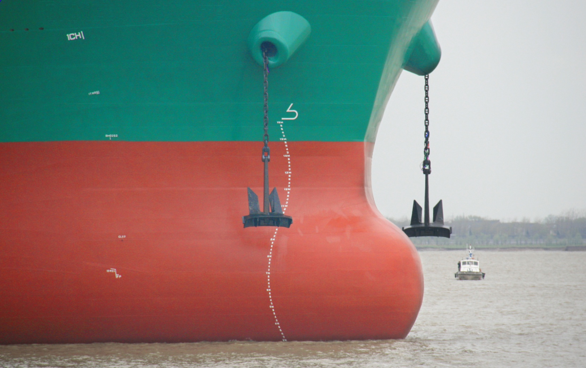
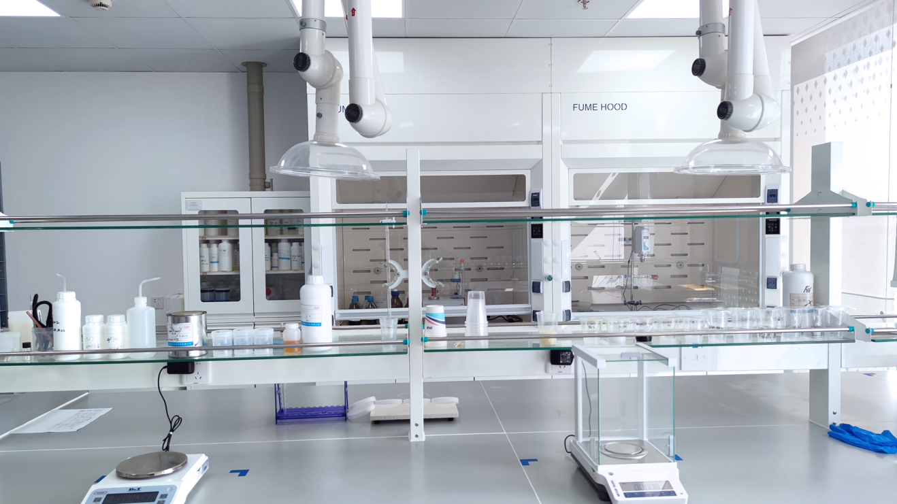
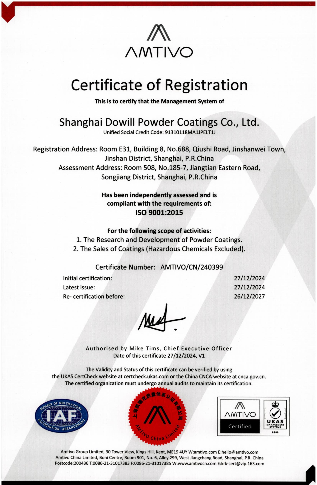

Advanced marine coatings, lower emissions and professional global support for shipowners and shipyards.
Explore SolutionsDownload CatalogueDW Marincoats is the overseas market operation and global customer service platform for Dowill Marine Coatings outside Mainland China. We support customers with product sales, global supply, technical guidance and after-sales service.





A focused marine coating portfolio for corrosion protection, underwater hull protection, newbuilding, dry dock and maintenance applications.

High-performance solvent-free marine coating for ballast tanks, cargo holds, fuel and fresh-water tanks, engine rooms, crew areas and external hull structures.
Technical values based on supplied product documentation. Refer to the latest TDS for project use.
Designed for underwater external hull areas and used together with DW ULV G50 as part of an integrated solvent-free marine coating system.
Dowill combines marine coating R&D, advanced manufacturing, laboratory testing and application technology to support reliable coating performance across demanding vessel environments.
Dedicated marine and offshore coating research capabilities supported by professional laboratories and testing equipment.
Manufacturing process control, product testing and project application support throughout the coating lifecycle.

Professional production bases in Jiangsu Qidong, Shandong Linyi, Shanghai Jinshan and Tianjin support stable product manufacturing and supply.
Four major production bases supporting coatings and new materials.
Industrial production lines and process equipment designed for stable quality.
Professional laboratories support product development, testing and quality assurance.

Supplied materials reference marine coating certifications from major classification societies. Certification documents should be displayed only when verified source files are available.
DW Marincoats supports overseas customers through sales and service coverage across key marine markets.
Explore Dowill's manufacturing, technology, product and service capabilities.
Download the current marine coating brochures and G50/G60 product information.
Talk to DW Marincoats about your newbuilding, dry dock or maintenance project.
Contact Technical Team